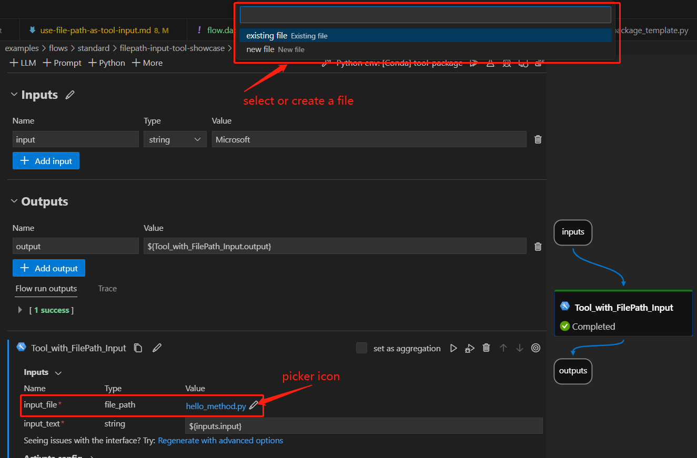

Using File Path as Tool Input#
Users sometimes need to reference local files within a tool to implement specific logic. To simplify this, we’ve introduced the FilePath input type. This input type enables users to either select an existing file or create a new one, then pass it to a tool, allowing the tool to access the file’s content.
In this guide, we will provide a detailed walkthrough on how to use FilePath as a tool input. We will also demonstrate the user experience when utilizing this type of tool within a flow.
Prerequisites#
Please install promptflow package and ensure that its version is 0.1.0b8 or later.
pip install promptflow>=0.1.0b8
Please ensure that your Prompt flow for VS Code is updated to version 1.1.0 or later.
Using File Path as Package Tool Input#
How to create a package tool with file path input#
Here we use an existing tool package as an example. If you want to create your own tool, please refer to create and use tool package.
Add a
FilePathinput for your tool, like in this example.import importlib from pathlib import Path from promptflow import tool # 1. import the FilePath type from promptflow.contracts.types import FilePath # 2. add a FilePath input for your tool method @tool def my_tool(input_file: FilePath, input_text: str) -> str: # 3. customise your own code to handle and use the input_file here new_module = importlib.import_module(Path(input_file).stem) return new_module.hello(input_text)
FilePathinput format in a tool YAML, like in this example.my_tool_package.tools.tool_with_file_path_input.my_tool: function: my_tool inputs: # yaml format for FilePath input input_file: type: - file_path input_text: type: - string module: my_tool_package.tools.tool_with_file_path_input name: Tool with FilePath Input description: This is a tool to demonstrate the usage of FilePath input type: python
[!Note] tool yaml file can be generated using a python script. For further details, please refer to create custom tool package.
Use tool with a file path input in VS Code extension#
Follow steps to build and install your tool package and use your tool from VS Code extension.
Here we use an existing flow to demonstrate the experience, open this flow in VS Code extension:
There is a node named “Tool_with_FilePath_Input” with a
file_pathtype input calledinput_file.Click the picker icon to open the UI for selecting an existing file or creating a new file to use as input.

Using File Path as Script Tool Input#
We can also utilize the FilePath input type directly in a script tool, eliminating the need to create a package tool.
Initiate an empty flow in the VS Code extension and add a python node titled ‘python_node_with_filepath’ into it in the Visual Editor page.
Select the link
python_node_with_filepath.pyin the node to modify the python method to include aFilePathinput as shown below, and save the code change.import importlib from pathlib import Path from promptflow import tool # 1. import the FilePath type from promptflow.contracts.types import FilePath # 2. add a FilePath input for your tool method @tool def my_tool(input_file: FilePath, input_text: str) -> str: # 3. customise your own code to handle and use the input_file here new_module = importlib.import_module(Path(input_file).stem) return new_module.hello(input_text)
Return to the flow Visual Editor page, click the picker icon to launch the UI for selecting an existing file or creating a new file to use as input, here we select this file as an example.

FAQ#
What are some practical use cases for this feature?#
The FilePath input enables several useful workflows:
Dynamically load modules - As shown in the demo, you can load a Python module from a specific script file selected by the user. This allows flexible custom logic.
Load arbitrary data files - The tool can load data from files like .csv, .txt, .json, etc. This provides an easy way to inject external data into a tool.
So in summary, FilePath input gives tools flexible access to external files provided by users at runtime. This unlocks many useful scenarios like the ones above.